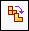

Create a simplified version of an assembly
Simplified assembly geometry can exist as either solid bodies, or visible faces. Before ST6, simplified assemblies consisted of face geometry. The ability to create simplified assemblies using face geometry using the Visible Faces command is still valid, however simplified assemblies can also be created by modeling solid bodies which represent the simplified assembly geometry. The simplified assembly model is stored within the assembly file and is created with the Model command.
When creating a simplified assembly by modeling a solid, access to ordered part modeling functionality is available as well as the commands Enclosure and Duplicate Body.
The Enclosure command uses an assembly reference plane to orient the enclosure and the enclosure can consist of a rectangular solid or a cylinder whose size is based on the extend of the parts in the selection set. The solid can then be modified using ordered features, such as rounds and cutouts to better represent the desired simplification.
The Duplicate Body command allows duplication of simplified solid geometry representing assembly components that occur multiple times within an assembly.
The Auto-Simplify command fuses all selected components into a single body with the option to remove all internal voids.
To access the commands for simplifying an assembly, you must first activate the Simplify Assembly application.
-
Choose Tools tab→Model group→Simplify to activate the Simplify Assembly commands.
The commands in the Simplify group are activated.
-
There are two different methods of simplifying an assembly. They are:
-
Choose Tools tab→Simplify group→Visible Faces
 .
. -
Choose Tools tab→Simplify group→Model

.
Before ST6, the Visible Faces command was the only method of creating a simplified assembly and is an alternative method for creating simplified assemblies and is still valid. Faces are created from selected parts. The faces can be excluded or defined as interior or exterior if needed.
The Model command is used to create the simplified representation by enclosing the selected parts within a solid body. The Enclosure command can add a rectangular or cylindrical volume around the volume to simplify, and other ordered features, such as cutouts and rounds.
Note:A simplified assembly consisting of solid geometry created with the Model command cannot exist simultaneously in an assembly containing a face geometry representation of a simplified assembly created with the Visible Faces command.
-
The following applies to the Visible Faces command  for simplifying an assembly:
for simplifying an assembly:
-
To exclude parts from the simplified assembly representation, do one or both of the following:
-
You can exclude parts by defining a part exclusion percentage using the Exclude parts field on the command bar. The smallest size part in the current view is 1 and the largest is 100. You can enter a size value in the field or use the left and right arrows to add or remove the next size of parts from the exclusion set based on their size. So as you increase the number, larger parts are excluded. You deselect a part by holding the Ctrl key and clicking a selected part.
-
In the graphics window or PathFinder, select the parts you want to exclude.
-
-
On the command bar, click the Preview button.
-
On the command bar, click the Finish button.
-
To return to the main Assembly environment, choose Tools tab→Model group→Design Assembly.
-
You can use the Simplified Assembly Options dialog box to set the colors you want to use for the Unprocessed Color, the Excluded Parts color, the Exterior Faces color, and the Interior Faces color. These color settings allow you to visualize how the final simplified assembly representation is displayed.
-
In some cases, an exterior face you want to include in the simplified representation is marked as an interior face. This can occur when a large assembly component obstructs an exterior face on another component. During the Modify Results Step, you can refine the output using the Rotate command to rotate the view to a new orientation to display the incorrectly marked face more clearly, and then click the Mark Faces as Exterior button to reprocess the results.
The following applies to the Model command for simplifying an assembly:
-
To create a solid representation of the assembly do the following:
-
Use the Enclosure command to begin modeling the solid body. Options are to create a box, an inside cylinder or and an outside cylinder. A reference plane is needed to orient the enclosure. After the parts are selected and the reference plane defined, the enclosure is created.
Note:An inside cylinder will fit within the boundaries of the selected parts. An outside cylinder will encompass the geometry of the selected parts.
-
The solid can be refined using ordered features such as protrusions, cutouts and rounds.
-
-
The model geometry is non-associative and can be used to position parts in the assembly.
-
The Duplicate command can copy instances of simplified assembly models in cases where repetitive geometry exists.
How do I
Edit an Auto-Simplify definitionCreate a single body using Auto-Simplify
Use the simplified version of a part in an assembly
Use the designed version of a part in an assembly
Save a simplified assembly as a part
Controlling simplified assemblies
Learn more
Simplifying partsSimplifying assemblies
Simplified assemblies best practices
Look up more details
Auto-Simplify commandAuto-Simplify command bar
Create Simplified Assembly using the Visible Faces command
Create Simplified Assembly using the Model command
Enclosure command
Duplicate Body command
Simplify Assembly command
Save Simplified As command
Use Simplified Parts command
Use Simplified Assemblies command
Simplify Model command
Update Simplified Assembly command
Save Simplified Assembly As dialog box
Simplified Assembly Visible Faces Options dialog box
Design Assembly command
Use Designed Assembly command
Use Designed Part command
Design Model command
Create Simplified Assembly Visible Faces command bar
Create Simplified Assembly Model command bar